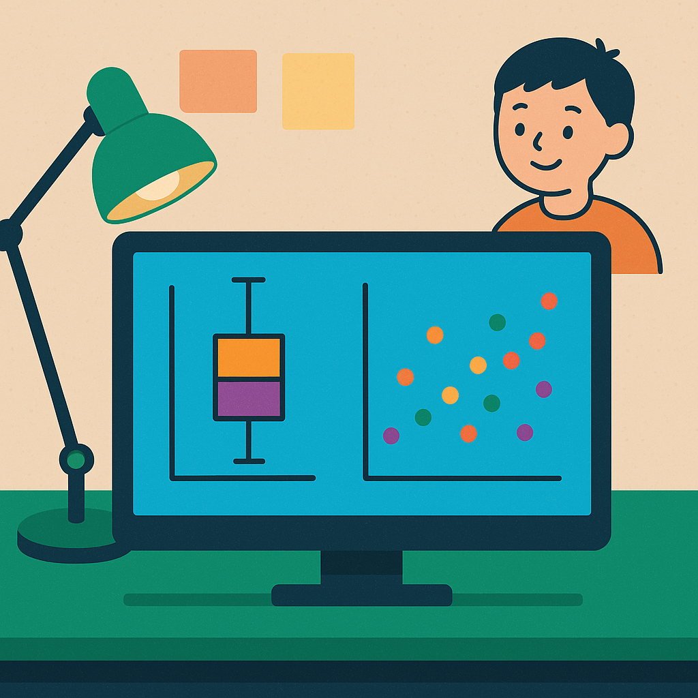

프로젝트 2 — CSV 읽기 + Seaborn 그래프 3종Project 2 — CSV Loading + 3 Seaborn Charts
OLED deposition 공정 데이터를 읽고 그래프와 통계 분석으로 공정 인사이트를 찾은 뒤 HTML 보고서로 문서화하는 프로젝트입니다. P1에서 익힌 CSV 분석 경험을 바탕으로, Seaborn 시각화를 활용해 보고서다운 결과물을 만듭니다.Read OLED deposition process data, discover process insights via charts & statistics, then document them as an HTML report. Building on P1 CSV skills, create report-quality outputs with Seaborn.
P1 → P2 성장: P1의 핵심이 "CSV를 읽고 그래프를 만든다"였다면, P2의 핵심은 "그래프를 근거로 원인 후보를 좁히고 보고서로 설명한다"입니다.P1 → P2 Growth: If P1 was "load CSV and create charts," P2 is "narrow down root-cause candidates from charts and explain in a report."
oled_deposition_xymap.csv — 4개 panel, 96×64 좌표, 총 24,576행의 OLED deposition 합성 데이터oled_deposition_xymap.csv — Synthetic OLED deposition data: 4 panels, 96×64 coords, 24,576 rows
| 컬럼Column | 의미Description | 활용 예Usage |
|---|---|---|
| panel_id, x_index, y_index | panel과 x/y 측정 좌표Panel & x/y coords | x/y map, heatmap |
| chamber, zone | 증착 chamber와 panel 영역Deposition chamber & zone | chamber별 boxplotBoxplot by chamber |
| source_temp_c, substrate_temp_c | 공정 온도Process temperature | 산점도Scatter plot |
| pressure_mTorr, oxygen_flow_sccm | 압력/가스 조건Pressure/gas conditions | 상관관계Correlation |
| thickness_nm, thickness_error_nm | 목표 두께 대비 편차Thickness deviation | boxplot, heatmap |
| particle_count, dark_spot_count | 결함 측정값Defect measurements | Pareto |
| defect_type, pass_fail | 결함 유형/판정Defect type/judgment | Pareto chart |
| yield_score | 좌표 단위 품질 점수Quality score per coord | scatter, regression |
아래 프롬프트 예시를 복사하여 Gemini에 붙여넣으세요.Copy the prompt example below and paste it into Gemini.
Gemini가 생성한 코드를 analysis.py로 저장합니다.Save Gemini's generated code as analysis.py.
생성된 report.html과 그래프 PNG를 확인합니다. 그래프가 올바르게 표시되는지, 해석 문장이 포함되어 있는지 점검합니다.Verify the generated report.html and chart PNGs. Check that charts render correctly and include interpretation text.
에러가 발생하면 에러 메시지를 Gemini에게 보여주고 수정을 요청하세요.Show error messages to Gemini and request fixes.
HTML 보고서에 각 그래프에 대한 한 줄 해석을 추가합니다. 브라우저에서 최종 확인 후 캡처합니다.Add one-line interpretations for each chart. Verify in browser and capture a screenshot.
| 항목Category | 세부 기준Details | 배점Pts |
|---|---|---|
| 데이터 처리와 재현성Data Processing & Reproducibility | CSV 정상 로드, 코드가 에러 없이 실행됨CSV loads correctly, code runs without error | 25 |
| 시각화 완성도Visualization Quality | boxplot, scatter, heatmap 각 1개 이상At least 1 boxplot, scatter, heatmap each | 25 |
| 분석 해석Interpretation | 각 그래프에 한 줄 이상 해석 포함One-line+ interpretation per chart | 25 |
| 보고서 문서화Report Documentation | HTML 보고서에 그래프와 해석이 포함됨HTML report includes charts & interpretations | 25 |
analysis.pyreport.html전체 데이터를 그대로 그리지 말고 pivot_table로 x/y 평균값을 먼저 만드세요. panel 하나만 선택해 분석하세요.Don't plot raw data. Create x/y averages with pivot_table first. Select one panel to start.
A. 그래프 개수보다 "왜 이 그래프를 선택했고 무엇을 알게 되었는지"가 더 중요합니다.A. "Why you chose this chart and what you learned" matters more than count.
A. 기준 산출물은 HTML 보고서입니다. Streamlit은 추가 산출물로 좋지만 필수는 아닙니다.A. The standard deliverable is an HTML report. Streamlit is a nice extra but not required.
A. 공개 저장소에는 절대 올리면 안 됩니다. 제공된 합성 CSV만 사용하세요.A. Never upload to public repos. Use only the provided synthetic CSV.
필수 제출물:
제출 방식 (택 1):
💡 영상이 어려우면 캡처 + 프롬프트 기록으로도 충분합니다